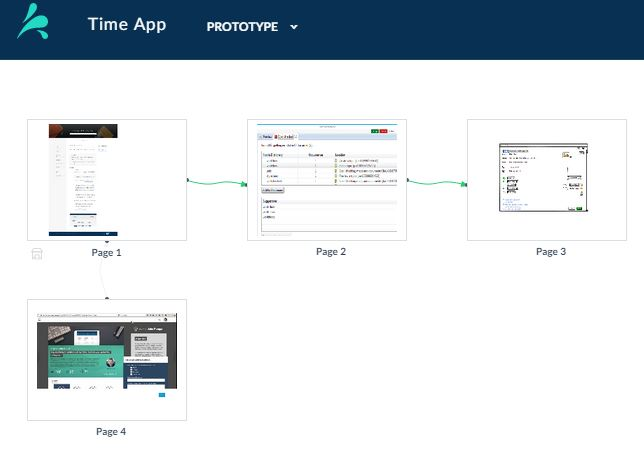

Use the page map view to see thumbnail images and interactions between your prototype
pages.
Prerequisites
Before you can fully view your page map, you must have several pages and interactions in your
project.
Procedure
- In the UI Editor, select the Page Map icon on the toolbaer.
- In the page map view, you can see thumbnail images of your pages. The green arrows show
navigation between pages. 
- In the page map view, you can: .
- Select any page to open it in the UI Editor.
- Select the
Trash icon to delete a page.
- Select New Page to add pages to your
prototype.